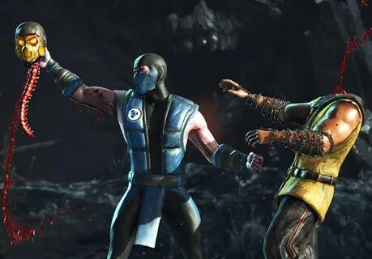
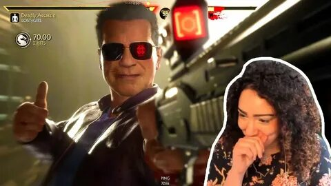
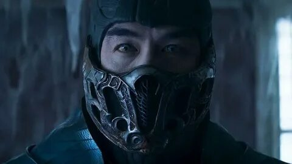
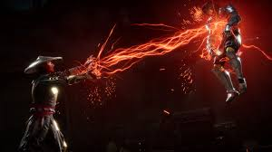
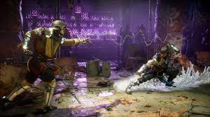

Cерия видеоигр в жанре файтинг, созданная Эдом Буном и Джоном Тобиасом. Игры этой серии изначально разрабатывались Midway Games для аркадных автоматов, а впоследствии были перенесены на другие платформы. Портированием на домашние игровые консоли занималась Acclaim Entertainment. После банкротства Midway Games в 2009 году все активы перешли в собственность Warner Bros., включая права на франшизу, принадлежащие в настоящее время Warner Bros. Interactive Entertainment. Первоначально у разработчиков была идея сделать видеоигру с участием Жана-Клода Ван Дамма, но вместо этого был создан и выпущен в 1992 году Mortal Kombat. Оригинальная игра получила продолжение в последующих играх серии и других адаптациях, в числе которых фильмы, мультфильмы, сериалы, комиксы, карточные игры, также был организован тур с костюмированным шоу. Наряду со Street Fighter, Mortal Kombat является одной из самых успешных и влиятельных франшиз среди файтингов за всю историю видеоигр. Серия известна высоким уровнем насилия, в первую очередь, своей системой кровавых добиваний — Fatality, требующей последовательности нажатия кнопок для выполнения, которая, в частности, привела к созданию ESRB. В самом названии серии также использовали букву «K» (кей) вместо «C» (си), тем самым умышленно создавая неправильное написание слова «Combat», такое написание «Kombat» сохранилось в последующих играх серии. Ранние игры серии были особенно известны реалистичными спрайтами из оцифрованных движений живых актёров, а также частым использованием смены палитры для создания новых персонажей.
В игре на момент её выхода имелось 25 игровых персонажей, на данный момент — 37. Первыми показанными из них стали персонажи из классической трилогии: Барака, Райдэн, Скорпион, Соня Блейд, Саб-Зиро и Скарлет — вернувшаяся из ремейка 2011 года, а также в 11-й части игры появился новичок по имени Герас, способности которого позволяют управлять потоком времени и совершать атаки на основе песка[11]. Кроме того, в игре представлены ещё 3 новых персонажа: Кроника, которая, как и Герас, имеет власть над временем и управляет событиями с самого начала серии игр. Она — первый за всю историю Mortal Kombat женщина-босс[12], а также она является неиграбельным персонажем;[13] Цетрион — старшая богиня, способная управлять силами природы. Также она — сестра Шиннока и дочь Кроники;[14] Коллектор — шестирукий сборщик дани, который служит империи Внешнего мира[15]. Каждый персонаж имеет уникальный набор экипировки и оружия, которые можно кастомизировать с помощью функции пользовательских вариаций (Custom Variation)[16]. Ниже приведены подтверждённые играбельные персонажи[17]. Персонажи, выделенные жирным шрифтом, являются новыми для серии. Персонажи, выделенные жирным курсивом, являются гостевыми.
Так же, как и предшественник, Mortal Kombat 11 представляет собой файтинг, выполненный в стиле 2.5D. Наряду с вернувшимися добиваниями — Фаталити и Бруталити, в геймплее появились новые приёмы, такие как Fatal Blow (с англ. — «Смертельный удар») и Krushing Blow (с англ. — «Сокрушительный удар»). Fatal Blow — особый приём, который наносит большой урон противнику, но становится доступным только тогда, когда здоровье игрока 30 % и ниже. Fatal Blow является заменой приёма X-Ray (Рентген) и может быть выполнен только один раз за матч. Krushing Blow — особая кинематографическая разновидность данного специального приёма, срабатываемая при выполнении определённых требований[9]. Mortal Kombat 11 также представляет систему экипировки, аналогичную последней игре NetherRealm Studios по вселенной DC Injustice 2. Однако система экипировки в Mortal Kombat 11 в большей степени косметическая, и в то же время она сохраняет настройки списка приёмов в системе вариаций, которые были впервые представлены в Mortal Kombat X, что позволяет игрокам создавать собственные списки приёмов на основе вариаций выбранных персонажей[10].
Вместе с тем игра была запрещена для продажи на территории Индонезии, Японии, Китая и Украины. На Украине игра была запрещена из-за демонстрации нацистских и коммунистических символов[56][57]. В частности, данные символы присутствуют в бонусных костюмах персонажа Скарлет в рамках премиум-издания MK11[58]. Выход игры также сопровождался резким недовольством в онлайн-пространстве и ревью бомбингом[59]. Помимо технических проблем, пользователи выражали недовольство агрессивной монетизацией[60], медленной прогрессией в одиночных режимах. Также среди старых фанатов Mortal Kombat предметом острых споров стал отказ от гиперсексуального изображения женщин, их новый и более закрытый дизайн одежды при том, что многие мужские персонажи были с обнажённым торсом[61]. Российские игровые издания называли женских персонажей «уродливыми»[62] и обвиняли в попытке угодить так называемым «войнам за социальную справедливость»[63]. Создатель франшизы Эдвард Бун в интервью журналу PlayBoy заметил, что в ранних играх женские персонажи из ранних игр и столь скудно одетые выглядят просто не реалистично для бойцов. Бун признался, что в игре от 2011 года создатели «перешли границу» с их сексуализацией[61]. Шквал первичного негатива привёл к тому, что в Steam начали удалять жалобы на несексуальный внешний вид героинь Mortal Kombat 11[64]. Это все привело к тому, что изначально пользовательские рейтинги в Steam и на Metacritic были крайне низкими[65]. На Metacritic у версии игры на тот[какой?] момент на ПК средняя оценка игроков — 2/10, на Playstation 4 — 3,1, на Xbox One — 2,1. Версия для Nintendo Switch имеет самую высокую оценку пользователей — 3,7[66]. Отдельно отмечалось, что не самым удачным оказался выбор звезды ММА и рестлинга Ронды Роузи в качестве голоса Сони Блэйд[67]. На фоне работы профессиональных актёров озвучивания её игру назвали посредственной и плоской[68]. Несмотря на это, игра стала самой продаваемой в истории франшизы (цифровые продажи)[69]. Также MK11 уже к июню стал самой продаваемой игрой года[70][71].
Игра получила преимущественно положительные отзывы критиков на всех выпущенных платформах, согласно агрегатору рецензий Metacritic[30][31][32][33]. IGN похвалил более медленный темп боя по сравнению с предыдущей игрой серии, а также расширенный учебник, режим истории и улучшенный сетевой код. Однако он осудил затянувшуюся прогрессию игры и систему разблокировки кастомизации, которая была описана как «удручающе хитрая и грязная»[38]. Gamespot дал игре 9 баллов, похвалив боевую систему, назвав её «доступной, глубокой и захватывающей», а также похвалив сюжетный режим. Однако они критиковали «всегда онлайн» — требование для прогрессии, а также рандомизацию вознаграждений в крипте[36]. Российские рецензенты выставили игре очень высокие оценки, хвалив систему боя и подвергнув критике мало эротики. Александр Пушкарь из «Игромании» очень высоко оценил качество боя, отметив что это тот самый MK, который был[46]. Евгений Пекло в обзоре для «Мир фантастики» хвалил компанию, и в итоге написал следующее: «идеальное завершение сюжета, лучшая игра в серии. Энергичная, динамичная, хлёсткая, в меру смешная, невероятно красивая и… народная»[55].
На шоу 17 января рассказали следующие факты об игре: сюжет МК11 будет происходить сразу после окончания МКХ. Новый персонаж, Кроника, которая умеет манипулировать временем, будет пытаться изменить ход истории, так как Рейден нарушил баланс между добром и злом. В игре будет две специальные полоски энергии — одна для атаки, другая для защиты, а также будут введены Fatal Blow и контратака, которая будет становится доступной для игрока, когда у него останется менее 30% жизней. Также в игре будет присутствовать обширная система кастомизации персонажей. Вариации также вернутся - их по-прежнему три на персонажа. Анонсированы персонажи Барака, Скарлет, Саб-Зиро, Соня Блейд и новый воин Герас. Также был намёк на присутствие в игре Кабала. Помимо этого в трейлере были замечены Китана, Кэсси Кейдж, Лю Кенг, Кунг Лао. На некоторых аренах были замечены Джонни Кейдж и Кано. [2] 31 января на показе игры в Бразилии, Кано был подтверждён в качестве играбельного персонажа. [3] 5 февраля Кабал и Ди'Вора были подтверждены в качестве играбельных персонажей. 14 февраля была анонсирована Джейд. 27 февраля анонсирован Джонни Кейдж. 6 марта показаны сюжетный трейлер, а также геймплей Кэсси Кейдж и Кано. 21 марта были представлены Коталь Кан и Джэки Бриггс. 23 марта был анонсирован Нуб Сайбот и первый DLC персонаж, Шанг Цунг. Его внешность основана на актёре Кери-Хироюки Тагава, который исполнял роль Шанг Цунга в первом фильме Смертельная битва 1995 года. 25 марта вышел новый трейлер игры подтвердивший присутствие в игре Кунг Лао, Лю Кенга, Джакса и Китаны в игре. 5 апреля вышел разбор геймплея Цетрионы и новый Комбат Каст показавший геймплей Коллекционера, Эррона Блэка и Нуб Сайбота. 12 апреля вышел очередной Комбат Каст, разобравший геймплей Китаны, Цетрион и Ди'Воры. 18 апреля вышел финальный трейлер в котором, кроме новых фрагментов сюжета, были также камео Сайракса, Сектора и Шивы. 22 апреля вышел финальный комбат каст продемонстрировавший геймплей Фрост и Шао Кана. 23 апреля игра вышла. 31 мая вышел трейлер демонстрирующий геймплей Шанг Цунга, а также анонсировавший нескольких DLC персонажей: Ночного Волка, Синдел и гостевого персонажа, Спауна из популярной серии комиксов. Ещё два гостевых персонажа будут анонсированы позднее. 5 июня прошёл Комбат Каст на котором разобрался геймплей Шанг Цунга. Шанг Цунг будет доступен в игре с 18 июня.
Отдельно стоит отметить графику. Она улучшилась не только по сравнению с MKX, но и с Injustice 2, который ещё два года назад был самым высокотехнологичным файтингом. С MK11 разработчики шагнули на новый для себя уровень. Цифровая обработка актеров позволила использовать не только продвинутую лицевую анимацию, но и приблизить внешность персонажей к своим прототипам. Плавные движения и насыщенные деталями арены выглядят очень зрелищно. Каждая локация проработана до мелочей, а их разнообразие порадует даже самых искушенных ценителей жанра. MK11 Говоря о визуальной составляющей, нельзя не отметить, что серия Mortal Kombat уже давно закрепила за собой статус главного праздника для любителей художественного трэша. Атмосфера старых боевиков и фильмов ужасов вперемешку с пародийными элементами придают битвам неповторимый колорит и узнаваемую атмосферу. Плавные движения, основанные на реальных боевых искусствах, соседствуют с кукольными полетами, отскоками и прочими кульбитами, что подчеркивает абсурдность творящегося на экране безумия. В процессе драки бойцам ломают кости, простреливают головы, а те потом встают и дерутся, как ни в чем не бывало. Такая карикатурная жестокость вместе с реалистичной графикой создают легкий диссонанс, который способствует правильному восприятию проекта как веселого файтинга для посиделок с друзьями и турниров.

Скорпион — грандмастер клана Ширай Рю.
Рейден — бог-хранитель Земного Царства.
Барака — предводитель расы кочевников-таркатан.
Скарлет — маг крови, личный телохранитель Шао Кана.
Саб-Зиро — грандмастер клана Лин Куэй.
Соня Блейд — генерал спецназа.
Кабал — член организации Чёрный дракон в прошлом. В настоящем ревенант из Преисподней
.
Кано — международный преступник, торговец оружием и предводитель организации Черный дракон.
Ди'Вора — представитель расы насекомых Китинн.
Джейд — эденийка, подруга Китаны в прошлом. В настоящем ревенант из Преисподней.
Джонни Кейдж — самовлюблённый актёр, звезда кинобоевиков в прошлом. В настоящем лидер одного из подразделений Отряда Особого Назначения
Кэсси Кейдж — дочь Джонни Кейджа и Сони Блейд. Лидер одного из подразделений Отряда Особого Назначения.
Джэки Бриггс — подруга Кэсси и дочь Джакса, член Отряда Особого Назначения.
Коталь Кан — император Внешнего Мира.
Эррон Блэк — ковбой-охотник за головами с Дикого Запада.
Нуб Сайбот — тень из Преисподней, в прошлом старший брат Саб-Зиро.
Кунг Лао — шаолиньский монах в прошлом. В настоящем ревенант из Преисподней
.
Лю Кенг — шаолиньский монах и чемпион Смертельной битвы в прошлом. В настоящем ревенант из Преисподней.
Джакс — бывший член Отряда Особого Назначения.
Китана — принцесса царства Эдения в прошлом. В настоящем ревенант из Преисподней.
Фрост — киборг, бывшая ученица Саб-Зиро, предавшая его.
- Динамическое разрешение до 4К - Улучшенные визуальные эффекты - Значительно сокращенное время загрузок - Совместимость с другими платформами и другими поколениями
